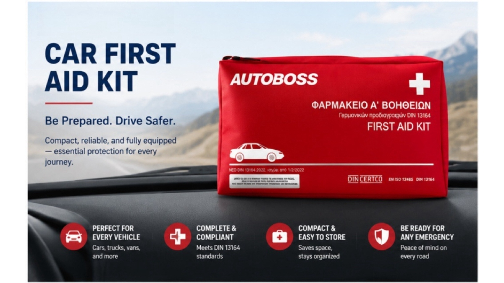

Selling Vehicle First Aid Kits in Europe? 5 Compliance Questions Every Importer Should Ask
JUN 23, 2026

Imagine this.
You've spent weeks sourcing a vehicle first aid kit supplier. The samples look good, the price is competitive, and production is on schedule.
Then your customer asks one simple question: “Can this kit be used in our market?”
Suddenly, the discussion is no longer about price. It's about compliance.
For many distributors and automotive accessory importers, the biggest risk isn't choosing the wrong supplier—it's overlooking a few critical details before placing the order.
Fortunately, most of these risks are preventable. Here are five questions experienced buyers usually ask before moving forward.
1. Does My Customer Actually Need This Configuration?
One of the most common assumptions is that one vehicle first aid kit works across every European market.
In reality, customer requirements may vary depending on the destination country, fleet policy, distributor specifications or project requirements.
Instead of assuming, ask your customer: “Is there a specific standard or product specification you need us to follow?”
This simple question can prevent unnecessary redesigns, shipment delays and expensive inventory that doesn't match the intended market.
2. Can My Supplier Support Compliance Documentation?
A professional supplier should be able to explain what documentation accompanies the product and what certifications are available for the applicable product range.
Depending on the project, buyers may request information such as:
| Procurement Question | Why It Matters |
|---|---|
| Product certifications | Supports customer confidence and project documentation. |
| Batch traceability | Helps manage quality records and future product recalls if required. |
| Product specifications | Ensures both parties are discussing the same configuration. |
You don't need to become a regulatory expert—but your supplier should be able to support you when customers ask these questions.
3. What Happens If My Customer Wants Custom Branding?
Many importers focus only on the product itself. However, fleet customers, distributors and corporate buyers often request their own branding.
Before ordering, confirm:
- Is private labeling available?
- What is the MOQ for OEM packaging?
- Can labels be customized for different markets?
Understanding these details early avoids surprises later in the project.
4. Will This Product Create More Work Later?
A low purchase price doesn't always mean lower overall cost.
Professional buyers often look beyond unit price and consider:
| Buyer Concern | Long-Term Impact |
|---|---|
| Shelf life | Longer shelf life helps reduce inventory waste. |
| Stable supply | Supports repeat orders and project continuity. |
| Lead time | Better planning for seasonal demand and tenders. |
| Refill availability | Makes future maintenance easier for customers. |
In many cases, reducing operational headaches is more valuable than saving a small amount on the initial order.
5. Can I Trust This Supplier When My Customer Has Questions?
Perhaps the most overlooked question isn't about the product. It's about the supplier.
Sooner or later, every distributor receives questions from customers:
- Can you provide technical information?
- Can we customize this?
- Can you help us prepare for this project?
A reliable supplier doesn't simply ship cartons. They help you answer these questions with confidence.
Procurement Tip
Before comparing prices, compare suppliers. A supplier who responds quickly, explains technical details clearly and supports your business after the shipment often creates far greater value than the lowest quotation.
How GoSafeMed Supports Importers
At GoSafeMed, we understand that importing vehicle first aid kits isn't just about purchasing products—it's about delivering confidence to your own customers.
Whether you're expanding your automotive product line, supplying fleet operators or preparing for a tender, we work with our manufacturing partners to provide compliant product solutions, flexible OEM options and practical procurement support.
Because successful importing starts long before the container leaves the factory.
Final Thoughts
The most successful importers don't necessarily buy the cheapest products. They ask better questions before they buy.
Sometimes, those five questions are enough to avoid months of unnecessary costs and frustration.
If you're planning to introduce vehicle first aid kits into your market, we'd be happy to discuss your project and recommend the most suitable solution for your customers.